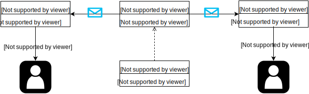
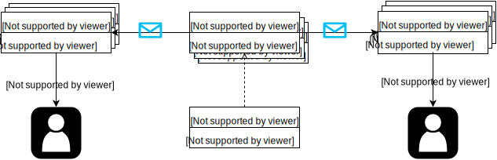

Building Games with Akka FSM
Why Games?
"We've been playing games since humanity had civilization - there is something primal about our desire and our ability to play games"
GameDuell
Bringing people together to have good times with games - Wherever, whenever!
Who are we?
- Founded in Berlin back in 2003
- Over 220 Employees
- More than 70 Games
- Over 125 Million Players
- Tech Talks with World Experts
What to expect
- Converting Games to State Machines
- What is Akka
- Writing FSM with Akka
Games
but... what type of games?
Single Player

Multiplayer
Challenges for Multiplayer Games
- Synchronization
- Data Integrity
- Resilient
- Responsive
A game is just a FSM behind the scenes

Not this!!!
Finite-State Machine
Is a mathematical model of computation used to design both computer programs and sequential logic circuits. It is conceived as an abstract machine that can be in one of a finite number of states.
How it works
- The machine is in only one state at a time
- It can change from one state to another when initiated by a triggering event or condition
- It is defined by both a list of its states and the triggering condition for each transition
- It can have a set of entry and exit actions
Translating Games into FSM
Let's pick a Game
Battleship

Rules
- Every player places their ships in a 10x10 board
- Each ship occupies a number of consecutive squares on the grid, vertically or horizontally
- Each type of ship occupies a determined number of squares
- Each player selects a position to shoot in turns
- Opponent must reveal if a ship was hit or not
- When all squares occupied by a ship are hit, the ship is sunk
- When a player sinks all opponent's ships, the game is over
Building the Finite-State Machine

What is Akka?
Akka...
- Is an Open-source toolkit and runtime
- Aims to simplify concurrent and distributed applications
- Supports multiple programming models
- Emphasizes the Actor Model, deeply inspired by Erlang's Actor Model
- Has both Java and Scala APIs
Actors in General
Actors are lightweight programmable queues of immutable messages which are processed asynchronously and in a non-concurrent fashion. They can communicate with other actors via immutable messages.
Also known as:Any => Unit
Some Benefits of Using Actors
- No need for Locking
- Message Driven
- Scalability
- Better analogies with human behavior
A simple Example (I)
sealed trait Message
case object Ping extends Message
case object Pong extends Message
A simple Example (and II)
class PingPongActor extends Actor {
def ping(times: Int): Receive = {
case Ping =>
println(s"Actor Received Ping, transition $times")
context.become(pong(times + 1))
}
def pong(times: Int): Receive = {
case Pong =>
println(s"Actor Received Pong, transition $times")
context.become(ping(times + 1))
}
override def receive: Receive = ping(0)
}Running It
val pingPongActor = system.actorOf(Props[PingPongActor], "PingPongActor")
pingPongActor ! Ping
pingPongActor ! Ping
pingPongActor ! Pong
pingPongActor ! Ping
>Received Ping, transition 0
>Received Pong, transition 1
>Received Ping, transition 2Akka FSM
A subtype of Actors that model a Finite-State Machine. It's described as a set of relations of:State(S) x Event(E) -> Actions(A), State(S')
A simple Example (I)
sealed trait Message
case object Ping extends Message
case object Pong extends Message
sealed trait State
case object WaitingPing extends State
case object WaitingPong extends State
case class Data(times: Int)A simple Example (and II)
class PingPongFSM extends Actor with FSM[State, Data] {
startWith(WaitingPing, stateData = new Data(0))
when(WaitingPing) {
case Event(Ping, data:Data) =>
println(s"Received Ping, transition ${data.times}")
goto(WaitingPong) using new Data(data.times + 1)
}
when(WaitingPong) {
case Event(Pong, data:Data) =>
println(s"Received Pong, transition ${data.times}")
goto(WaitingPing) using new Data(data.times + 1)
}
initialize()
}Running It
val pingPongFSM = system.actorOf(Props[PingPongFSM], "PingPongFSM")
pingPongFSM ! Ping
pingPongFSM ! Ping
pingPongFSM ! Pong
pingPongFSM ! Ping
>Received Ping, transition 0
>[WARN] ... unhandled event Ping in state WaitingPong
>Received Pong, transition 1
>Received Ping, transition 2What about tests?
"A PingPongFSM actor" must {
"behave in Ping Pong fashion" in {
val pingPongFSM = TestFSMRef(new PingPongFSM)
assert(pingPongFSM.stateName === WaitingPing)
pingPongFSM ! Ping
assert(pingPongFSM.stateName === WaitingPong)
pingPongFSM ! Ping
assert(pingPongFSM.stateName === WaitingPong)
pingPongFSM ! Pong
assert(pingPongFSM.stateName === WaitingPing)
pingPongFSM ! Ping
assert(pingPongFSM.stateName === WaitingPong)
}
}Games to Akka FSM
Remember the Battleship Game?
How many actors?
It depends...
- How many "units" do exist?
- Are there too many states?
- Is some part I/O extensive?
How do we orchestrate all these?
WARNING!
The Following Code has been simplified for clarity
Don't run this code at home!
Let's create the State Objects
sealed trait BattleshipState
case object WaitingForPlayers extends BattleshipState
case object PlacingShips extends BattleshipState
case object WaitingForNextPlayer extends BattleshipState
case object CheckingShot extends BattleshipState
case object HitShip extends BattleshipState
case object EndGame extends BattleshipStateNow the Messages Sent
sealed trait BattleshipMessages
case class PlaceShip(playerId: Int, id: Short, coord: Coord,
size: Short, vertical: Boolean) extends BattleshipMessages
case object ShipsPlaced
case object NextPlayer
case class PlaceShot(playerId: Int, coord: Coord)
extends BattleshipMessages
case object Miss extends BattleshipMessages
case object Hit extends BattleshipMessages
case object ShipsAlive extends BattleshipMessages
case object AllShipsSunk extends BattleshipMessages
case class Message(msg: String)What do we need as a State Data?
- Both Grids
- Who is in turn
- Ships to Place
- Shot to Check
Let's focus on the first state
Let's focus on the first State
class BattleShipActor(player1: ActorRef, player2: ActorRef)
extends ActorLogging with FSM[BattleshipState, BattleshipData] {
...
when(WaitingForPlayers) {
case Event(PlaceShip(playerId, shipId, coord, size, vertical), data)=>
if (data.canShipBePlaced(playerId, shipId, coord, size, vertical))
sender ! Message("Placed")
else sender ! Message("Wrong Position")
goto(PlacingShips) using
data.placeShip(playerId, shipId, coord, size, vertical)
}
...
}Easy, huh?
Let's focus on the second state
Let's focus on the second state
when(PlacingShips) {
case Event(PlaceShip(playerId, shipId, coord, size, vertical), data)=>
if (data.canShipBePlaced(playerId, shipId, coord, size, vertical))
if (data.canShipBePlaced(playerId, shipId, coord, size, vertical))
sender ! Message("Placed")
else sender ! Message("Wrong Position")
stay using data.placeShip(playerId, shipId, coord, size, vertical)
else stay
case Event(ShipsPlaced, data) =>
players.foreach(_ ! Message("Ships placed"))
goto(WaitingForNextPlayer)
}Who sends this Ships Placed message?
We must define our Entry Actions!
onTransition {
case _ -> PlacingShips =>
if (nextStateData.shipsToPlace.forall(_.isEmpty)) self ! ShipsPlaced
}However, This won't work
def onTransition(transitionHandler: TransitionHandler): Unit
Set handler which is called upon each state transition, i.e. not when staying in the same state.
State Machine Revisited!
Let's check the code again
when(PlacingShips) {
case Event(PlacedShip, _) =>
goto(CheckingPlacedShips)
}
when(CheckingPlacedShips) {
case Event(PlaceShip(playerId, shipId, coord, size, vertical), data)=>
if (data.canShipBePlaced(playerId, shipId, coord, size, vertical))
sender ! Message("Placed")
else sender ! Message("Wrong Position")
goto(PlacingShips)
using data.placeShip(playerId, shipId, coord, size, vertical)
case Event(ShipsPlaced, _) =>
players.foreach(_ ! Message("Ships placed"))
goto(WaitingForNextPlayer)
}And the Transition Handlers
case _ -> PlacingShips => self ! PlacedShip
case _ -> CheckingPlacedShips =>
if (nextStateData.shipsToPlace.forall(_.isEmpty)) self ! ShipsPlacedLet's tackle the remaining states
Let's tackle the remaining states
when(WaitingForNextPlayer) {
case Event(NextPlayer, data) =>
stay using data.copy(currentPlayer = data.opponent)
case Event(PlaceShot(playerId, x, y), data) =>
goto(CheckingShot) using data.copy(pendingShot = Some(x, y))
}
when(CheckingShot) {
case Event(Miss, data) =>
goto(WaitingForNextPlayer) using data.copy(pendingShot = None)
case Event(Hit, data) =>
goto(HitShip) using data.shoot.copy(pendingShot = None)
}
when(HitShip) {
case Event(ShipsAlive, data) =>
goto(WaitingForNextPlayer) using data
case Event(AllShipsSunk, _) => goto(EndGame)
}With their Entry Actions
case _ -> WaitingForNextPlayer =>
players.foreach(_ ! Message(s"End of ${nextStateData.currentPlayer} turn"))
self ! NextPlayer
case _ -> CheckingShot =>
if (nextStateData.wouldBeAShot) {
players.foreach(_ ! Message(s"Ship Hit at ${nextStateData.pendingShot}!"))
self ! Hit
}
else {
players.foreach(_ ! Message(s"Missed at ${nextStateData.pendingShot}!"))
self ! Miss
}
case _ -> HitShip =>
if (nextStateData.areShipsAlive(nextStateData.opponent))
self ! ShipsAlive
else self ! AllShipsSunk
case _ -> EndGame => players.foreach(_ ! Message("Game is Over"))What Happens with Timers?

We can add State Timeouts
when(WaitingForNextPlayer, stateTimeout = 30 seconds) {
case Event(NextPlayer, data) =>
stay using data.copy(currentPlayer = data.opponent)
case Event(PlaceShot(playerId, x, y), data) =>
goto(CheckingShot) using data.copy(pendingShot = Some(x, y))
case Event(StateTimeout, data) =>
stay using data.copy(currentPlayer = data.opponent)
}Now Let's Add Some Tests!
Simple Test...
def getBattleshipFSM() = {
val player1Probe = TestProbe()
val player2Probe = TestProbe()
TestFSMRef(new BattleShipActor(player1Probe.ref, player2Probe.ref))
}
"A Battleship actor" should {
"start in WaitingForPlayers state and be initialized" in {
val battleshipFSM = getBattleshipFSM()
assert(battleshipFSM.stateName === WaitingForPlayers)
val stateData = battleshipFSM.stateData
assert(stateData.currentPlayer === 1)
assert(stateData.grids.forall(_.isEmpty))
assert(stateData.pendingShot === None)
}
}Now Checking Transitions...
"A Battleship actor" when {
"in WaitingForPlayer state" can {
"go to CheckingPlacedShips state" in {
val battleshipFSM = getBattleshipFSM()
assert(battleshipFSM.stateName === WaitingForPlayers)
battleshipFSM ! PlaceShip(playerId = 1, id = 2,
Coord(x = 1, y = 1), size = 3, vertical = true)
assert(battleshipFSM.stateName === CheckingPlacedShips)
assert(battleshipFSM.stateData.isOccupied(playerIdx = 1,
Coord(x = 1, y = 1)))
}
}
}And Checking Intermediate States
"A Battleship actor" when {
"in CheckingPlacedShips state" can {
"go to WaitingForNextPlayer" in {
val battleshipFSM = getBattleshipFSM()
battleshipFSM.setState(CheckingPlacedShips, battleshipFSM.stateData)
assert(battleshipFSM.stateName === CheckingPlacedShips)
battleshipFSM ! ShipsPlaced
assert(battleshipFSM.stateName === WaitingForNextPlayer)
assert(battleshipFSM.isStateTimerActive)
}
}
}Cool...
but what if I have more than 2 users?
Scaling Up
Scaling Out
Wrap Up
- Nice DSL for building FSM
- Forget locks!
- Focused on state-centric FSM
- You might need to adapt your FSM to Akka
- Extensive use of Mocks for testing
And remember...
JVM Developers can also build Games!
Q & A
Further Information
Link to Slides
jlprat.github.io/Building-Games-with-Akka-FSM/goto.htmlCode will appear in GitHub repo soon...